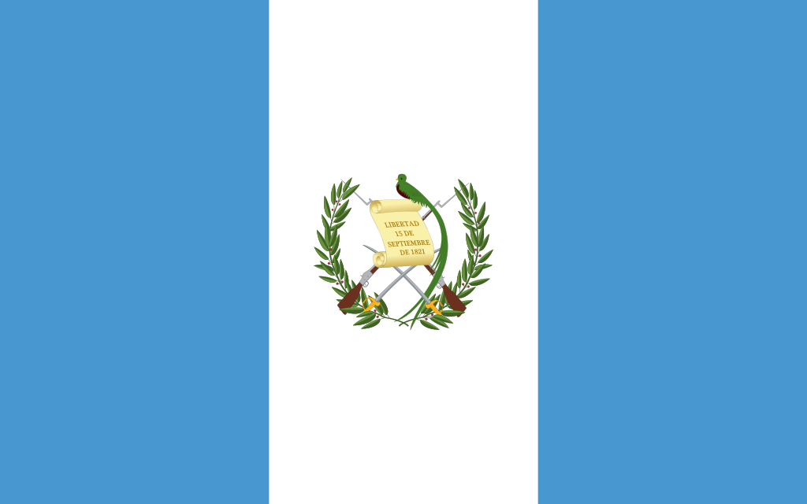

About Me
My name is Andy and I am from Guatemala, I am currently studying Dynamic Web Fundamentals at BYU-Idaho. I love to play the piano and to learn new things even though sometimes is hard for me, I never give up.
Guatemala, Guatemala
Guatemala is a Central American country with a beautiful country, it has stunning beaches, Mayan ruins, mountains, and awesome volcanoes. Guatemala is crossed by a large chain of volcanoes.